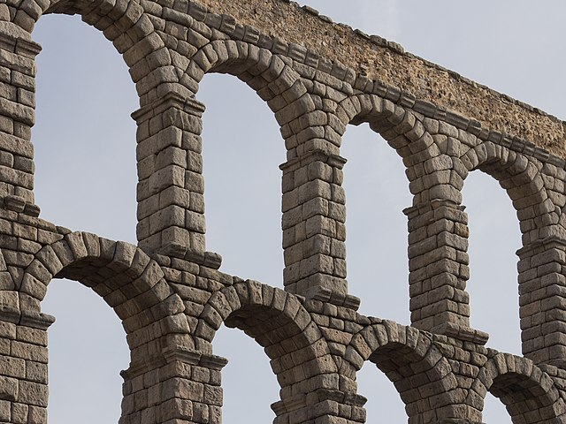

Introduction to Structures¶

- Structure
- It is a set of elements designed to withstand efforts without breaking or deforming.
En la naturaleza existen multitud de estructuras desde el tronco que sostiene un árbol hasta nuestro esqueleto. Todas ellas soportan esfuerzos para superar la gravedad y en el caso de los esqueletos también permiten el movimiento.
En el ámbito técnico la construcción de estructuras para fabricar viviendas, barcos o vasijas es tan antigua como la propia civilización. Hoy en día las estructuras pueden ser muy complejas y permiten construir edificios, automóviles, aviones, puentes, torres de alta tensión, presas y un sinfín de aparatos sin los cuales el mundo actual, tal y como lo conocemos, no existiría.
Origen de las estructuras¶
Las estructuras se pueden diferenciar dependiendo de su origen:
| Natural | Tree trunk. Turtle shell. Human skeleton. Mollusk shells. Nido de pájaro. |
| Artificial | Suspension bridge. Structure of a building. Computer case. Construction crane. Muralla. |
Clasificación de las estructuras¶
Dependiendo de sus elementos podemos clasificar las estructuras en los siguientes grupos:
- Masivas
Formed by a large mass of material with hardly any gaps.
Ejemplos: Presa de agua. Pirámide. Murallas.
- Abovedadas
Formed by arches and vaults.
Ejemplos: Techo de catedral gótica. Puente romano. Acueducto. Panteón de Roma.
Arcos del acueducto de Segovia.¶
Carlos Delgado, CC BY-SA 3.0 International, via Wikimedia Commons.- Trianguladas
Formed by bars joined together in triangles.
Ejemplos: Grúa de obra. Torre Eiffel. Torre de alta tensión.
- Entramadas
Formed by vertical and horizontal elements.
Ejemplos: Estructura de edificio. Sillas y mesas. Escalera de mano.
- Colgantes
Made up of cables that support loads.
Ejemplos: Teleférico. Puente atirantado o puente colgante. Grúa de obra. Tirolina.
- Laminares
Formed by a sheet or thin wall.
Ejemplos: Cuenco. Caparazón de tortuga. Casco para moto. Depósito de agua.

{kind=link}
{kind=link}
{kind=link}
{kind=link}
{kind=link}
Movimiento en las estructuras¶
La mayoría de las estructuras se construyen para que no puedan moverse. Sin embargo algunas estructuras deben permitir el movimiento para poder funcionar correctamente. Estas estructuras seguirán resistiendo los esfuerzos y su propio peso sin romperse, pero permitirán el movimiento de alguna de sus partes.
- Estructuras móviles
They can move or are articulated. They support loads while allowing movement.
Ejemplos: Puerta con bisagra. Puente levadizo. Silla con ruedas. Grúa.
- Estructuras fijas
They do not move nor can they be moved.
Ejemplos: Puente. Edificio. Torre de alta tensión. Cuenco.
Exercises¶
Enumera cuatro estructuras naturales y cinco artificiales.
Enumera cuatro estructuras masivas.
Enumera cuatro estructuras abovedadas.
Enumera cuatro estructuras trianguladas
Enumera cuatro estructuras entramadas
Enumera cuatro estructuras colgantes
Enumera cuatro estructuras laminadas
State the differences between triangulated and lattice structures.
Classify the following structures:
- Aqueduct
- Turtle shell
- Computer case
- Helmet
- Mollusk shells
- Bowl
- Human skeleton
- Building structure
- Construction crane
- Church
- Table
- Chinese wall.
- Pyramid.
- Water dam.
- Cable-stayed bridge.
- Suspension bridge.
- Roman bridge
- Chair
- Cableway
- High voltage tower
- Eiffel Tower
- Tree trunk
Indicate what type of structure each of the following phrases refers to:
- Formed by cables that support the loads.
- Formed by vertical and horizontal elements.
- Formed by arches and vaults.
- Formed by a large mass of material with hardly any gaps.
- Formed by a thin sheet or wall.
- Formed by bars joined together in triangles.